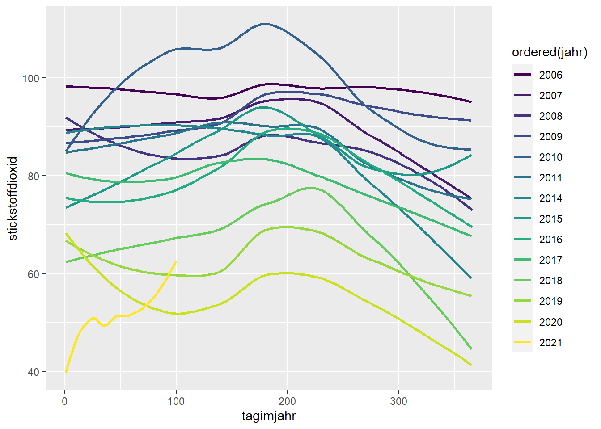

5 Zeit
Das Thema Zeitbezug erschließen wir uns anhand von Daten zu Luft-Schadstoffmessungen an ausgewählten Standorten in Deutschland seit 2006. Ausgewählt wurden neben zwei Kieler Standorten 6 Standorte mit überwiegend hohen Werten (für unterschiedliche Schadstofftypen). Zu beachten ist, dass im Datensatz auch eine große Anzahl an fehlender Werte (NA) enthalten sind.
library(tidyverse)
library(sf)
df <- read_csv("data/schadstoffe-zeitreihen.csv")
glimpse(df)## Rows: 39,001
## Columns: 14
## $ standort_id <chr> "deby115", "deby115", "deby115", "deby115", "deby115~
## $ standort <chr> "München/Landshuter Allee", "München/Landshuter Alle~
## $ datum <date> 2006-01-01, 2006-01-02, 2006-01-03, 2006-01-04, 200~
## $ kohlenmonoxid <dbl> 0.9445625, 1.1983400, 0.9279800, 0.6893000, 0.676340~
## $ stickstoffmonoxid <dbl> 90.25696, 141.18668, 116.77000, 58.74500, 53.13500, ~
## $ stickstoffdioxid <dbl> 99.14758, 80.95000, 79.06500, 57.35332, 50.00500, 53~
## $ stickoxide <dbl> 237.2274, 297.2742, 258.1775, 147.5283, 131.4792, 10~
## $ feinstaub10 <dbl> 59.47917, 38.29084, 29.28584, 21.94332, 27.47916, 34~
## $ feinstaub2.5 <lgl> NA, NA, NA, NA, NA, NA, NA, NA, NA, NA, NA, NA, NA, ~
## $ ozon <lgl> NA, NA, NA, NA, NA, NA, NA, NA, NA, NA, NA, NA, NA, ~
## $ schwefeldioxid <lgl> NA, NA, NA, NA, NA, NA, NA, NA, NA, NA, NA, NA, NA, ~
## $ typ <chr> "traffic", "traffic", "traffic", "traffic", "traffic~
## $ gebiet <chr> "urban", "urban", "urban", "urban", "urban", "urban"~
## $ hoehe <dbl> 521, 521, 521, 521, 521, 521, 521, 521, 521, 521, 52~Der Zeit-Aspekt bringt einige Besonderheiten mit sich. Unter anderem wollen wir prüfen, ob die Entwicklung von Luftqualitätsmessungen einem bestimmten Saisonalen (oder anderartigem) Muster unterliegt. Dafür extrahieren wir aus der Datumsvariable zunächst zusätzliche Informationen.
df <- df %>% mutate(jahr = lubridate::year(datum),
tagimjahr = lubridate::yday(datum),
monat = lubridate::month(datum, label=TRUE, abbr = TRUE),
wochentag = lubridate::wday(datum, label=TRUE, abbr = TRUE))Das besondere an den Variablen monat und wochentag ist, dass es sich hierbei um ordinal-skalierte Variablen handelt (ordered factors). Dies hat den Vorteil, dass sie sprechend als Januar, Februar, etc. dargestellt werden, sie aber der natürlichen Sortierung unterliegen. Überprüfen lässt sich der Variablentyp wie folgt:
class(df$monat)## [1] "ordered" "factor"Zunächst fokussieren wir uns auf die Besonderheiten bzgl. der Visualisierung einer einzelnen Zeitreihe. Dazu beschränkten wir den Zeitreihen-Datensatz auf einen Standort.
muenchen <- df %>% dplyr::filter(standort == "München/Landshuter Allee")Es stellt sich die Frage nach einem geeigneten geometrischen Objekt (geometric object). Grundsätzlich eignen sich Liniendiagramme (geom_line) gut für Zeitreihen. Aufgrund der hier vorliegenden starken Schwankungen kann es aber Sinn machen, die einzelnen Messpunkte (geom_point) darzustellen. Um den langfristigen Trend zu verdeutlichen eignet sich eine geglättete Trendlinie (geom_smooth).
p <- muenchen %>% ggplot(aes(datum, stickstoffdioxid))
p + geom_line()
p + geom_point()
p + geom_line() + geom_smooth()
Es lässt sich bereits erahnen, dass im vorliegenden Fall die Schwankungen einem bestimmten Muster mit Zeitbezug folgen. Schauen wir uns ein einzelnes Jahr konkreter an. Bei stickstoffdioxid scheint im Jahr 2019 kein klares saisonales Muster vorzuliegen. Wir können an diesem Beispiel aber demonstrieren, wie sich die Datum-Labels und die Gitterlinien anpassen lassen. Die unzähligen Formatierungsoptionen für Datums-Labels können via help(strftime) nachfollzogen werden.
p <- muenchen %>%
filter(jahr==2019) %>%
ggplot(aes(datum, stickstoffdioxid)) +
geom_line() + geom_smooth()
p + scale_x_date(date_labels = '%D')
p + scale_x_date(date_labels = '%a, %d. %B %y',
date_breaks = "4 months",
date_minor_breaks = "1 months")
Um nachzuvollziehen, ob sich ein bestimmtes saisonales Muster nur in einem Jahr zeigt, oder in allen Jahren, können wir die Variable jahr der Ästhetik Farbe zuordnen. Das funktioniert allerdings nur, wenn sie die numerische Variable jahr in eine kategoriale Variable (factor) umwandeln. Speziell geeignet ist hier wieder die Ordinal-Skalierung (ordered).
muenchen %>%
ggplot(aes(tagimjahr, stickstoffdioxid, color = ordered(jahr))) +
geom_smooth(se=FALSE)
Um den Tag im Jahr sprechender zu gestalten, bedienen wir uns eines Tricks:
muenchen %>%
mutate(datum0 = as.Date("1970-01-01") + tagimjahr) %>%
ggplot(aes(datum0, feinstaub10, color = ordered(jahr)))+
geom_smooth(se=FALSE) +
scale_x_date(date_labels = "%B")